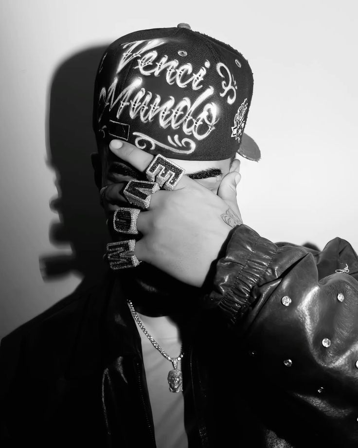
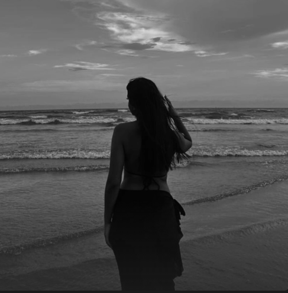
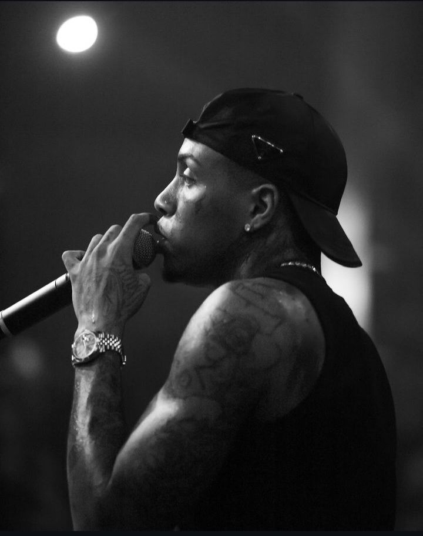

Veigh
Curtido por 221 mil pessoas
veigh Um mano que costuma ter visões.
 Instagram
Instagram



Seu story

marimaria

jadepicon

camilaloures

realkayblack

rafaellelivia

Veigh
Curtido por 221 mil pessoas
veigh Um mano que costuma ter visões.
 orochi
orochi
Curtido por 131 mil pessoas
orochi Uma honra lançar um trampo desse nível na pista mt obg diretor @ferr4ro e toda sua equipe responsável por tirar do papel e entregar isso pro mundo!!! A ideia desse clipe sou eu matando uma versão antiga minha e entrando em uma “outra dimensão” ⚰️ 🕯️ ☠️ escutem muito a nova… Constância no TRAP!!!!!!! 🕹️🕹️🕹️
 exudoblues
exudoblues

Curtido por 155 mil pessoas
exudoblues as vezes sinto que minha grandeza te assusta
marimaria

Curtido por 132 mil pessoas
marimaria Ontem foi um dia muito lindo com a @marimariamakeup assinando a beleza do desfile da @tigoficial uma marca que traduz exatamente a estética que eu AMO: moderna, autêntica e cheia de sensorialidade. Com uma pele fresca, iluminada e super expressiva, com o glow como protagonista. E claro: usei dois dos nossos lançamentos mais especiais do ano, o Iluminador ICE GLOW, com textura jelly fórmula geladinha, acabamento molhado sofisticado, 100% vegana e hipoalergênica. Disponível em quatro tons que eu sou simplesmente apaixonada: Snowflake, Cocoa Frost, Glacial Rose e Icy Beam. ❄️✨ Completamos o look com a Base Cover Up, os pós soltos Soft Silk e as lapiseiras Line Up e Simple Lips — tudo pensado para entregar performance, conforto e muita personalidade na passarela. Participar desse desfile foi MUITO especial. Poder traduzir a estética da nova geração com produtos que representam uma brasilidade com frescor, liberdade criativa e autoexpressão é exatamente o propósito da @marimariamakeup . E isso é só o começo! 👁️✨ Obrigada,TIG @marcogurgel @_joanaandrade por esse momento tão lindo. E obrigada a vocês por estarem sempre comigo nessa jornada de inovação no universo da beleza. 💕
camilaloures

Curtido por 110 mil pessoas
camilaloures É HOJE! vem aí mais uma temporada do nosso PodCats! 🎙️🐱 Toda honra e glória a Deus! Nosso coração ta cheio de alegria e gratidão… Cada episódio, cada convidado e cada conversa é uma oportunidade de aprender, rir e viver momentos incríveis com vocês. Que Deus continue abençoando esse projeto e todos que fazem parte dele. Estamos muito felizes por começar mais essa temporada com vocês! ✨